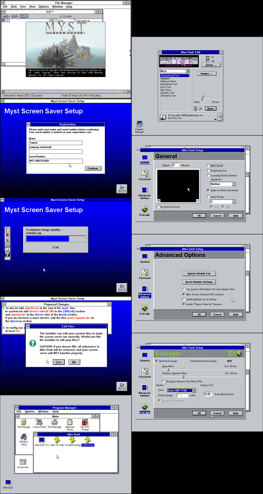
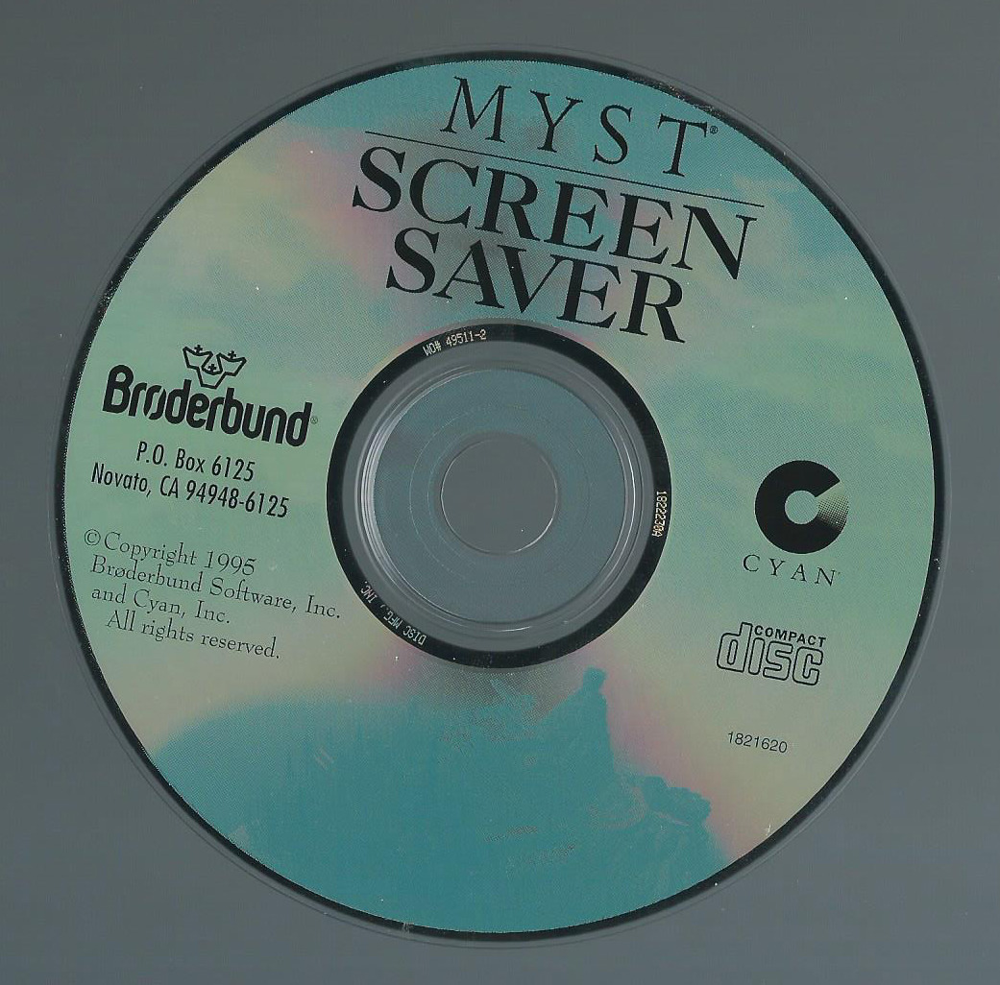
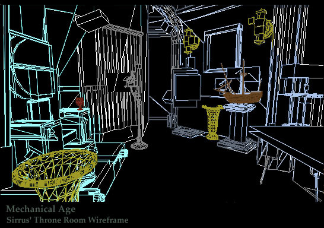
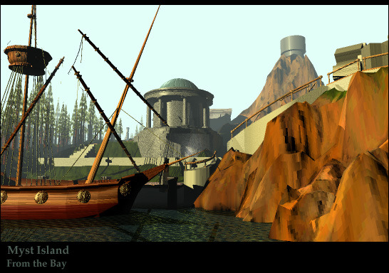
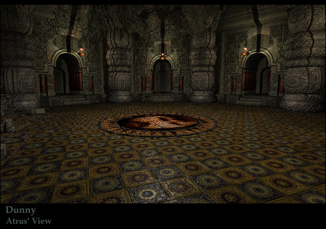

the Myst Screen Saver CD-ROM was a full-featured screensaver for Windows 3.1 that was released in 1995. Made by After Dark, the same folks that made the famous Flying Toasters screensaver, this disk would install both the After Dark engine as well as around 250 images from Myst.
First, let’s talk about the engine itself. Windows 3.1 didn’t have built-in screenshot functionality, and this engine had a lot of the features that are built-in to every OS nowadays. After a set amount of time, it would begin to display one of the several slideshow options (options like Selenitic Age, Highlights, and New Views) which had between 22 and 35 images each. There were also options for sound along with the slideshow, but I wasn’t able to get any sounds to play, and couldn’t find any on the disk. Either the sound is an esoteric and ancient format that I couldn’t get working, or the sound options are just something built into their engine.
There was also a password protect option, which was pretty cool at the time. However, you could get around it just by booting into DOS (remember, this is windows 3.1, which was installed on top of DOS) and deleting the config file. It even walks you through this process in the instruction booklet, so that’s one hell of a security hole.
The last option set was an energy saver, which could put your computer to sleep and shut off your monitor after a certain amount of time. Back then, every computer used a CRT, which uses no small amount of energy. it would even calculate your savings per year, although this required knowing the wattage of your monitor (or having one of the dozen or so monitors in it’s database.)
My biggest gripes with this software are that the slideshows are RIFE with spoilers, and I couldn’t actually get the screensaver to start without crashing Windows entirely. (Nevermind the pain in the butt it was to get DOS 6, Win 3.11, and a CD driver all loaded when I don’t have a floppy drive). Also, the one D’ni slide is labelled “Dunny”…
If you want to mess around with it, I’ve hosted the CD image here. It’s tiny.
https://dl.dropboxusercontent.com/u/44459847/Forum/MYST_SS.ISO
Yes, it does ask for a CD key, which was printed inside the instruction booklet.
MSS-00670-6681
Now, the images themselves are the real meat of the disk. Most of them are just screenshots from the game. While none of them contain actual puzzle solutions, there are a great deal of them which spoil parts of the game, because most of the game is locked behind puzzles. Also, each one contains a two-line label at the bottom, but the exact alignment of the text changes from slide to slide, which leads me to believe that they were not made using a template but instead hand-labelled in an image editor.
There are, however, two slideshows of great interest: New Views and Making of Myst. New Views contains a whole host of new renders, most of which I have not seen anywhere else, while Making of Myst contains concept art and wireframe views of final scenes. Both are worth looking through, for sure
Click here for the New Views images
Click here for the Making of Myst images
Click here for every image on the disk
I want these new renders and such to be passed around as much as possible so they aren’t lost like tears in rain, so feel free to repost any of this wherever you want.
Edit: fixed an image Tumblr overcompressed